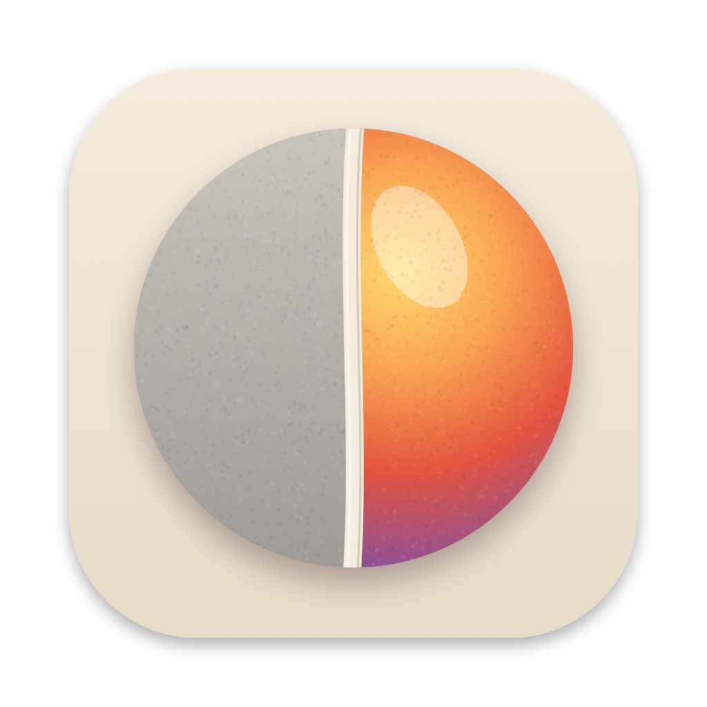

Politique de confidentialité
Privacy policy
Política de privacidad
Política de privacidade
Privacybeleid
Datenschutzerklärung
Informativa sulla privacy
Application Atelier · dernière mise à jour : 6 novembre 2026 · Page d'accueil
Atelier app · last updated: November 6, 2026 · Home page
App Atelier · última actualización: 5 de noviembre de 2026 · Página de inicio
App Atelier · última atualização: 5 de novembro de 2026 · Página inicial
App Atelier · laatst bijgewerkt: 5 november 2026 · Startpagina
App Atelier · zuletzt aktualisiert: 5. November 2026 · Startseite
App Atelier · ultimo aggiornamento: 5 novembre 2026 · Pagina iniziale
En une phrase
Atelier ne collecte rien. Pas de compte, pas de publicité, pas de statistiques : vos images restent sur votre Mac, et l'app fonctionne entièrement sans internet.
Ce que Atelier ne fait pas
- Aucune donnée personnelle collectée, aucune statistique d'utilisation, aucun mouchard.
- Aucun compte à créer, aucune publicité.
- Vos images ne sont jamais envoyées nulle part : elles sont ouvertes et retouchées sur le Mac lui-même.
Ce à quoi Atelier accède
Uniquement les fichiers que vous ouvrez ou enregistrez vous-même. Atelier ne demande aucune autorisation particulière (ni Accessibilité, ni micro, ni caméra, ni enregistrement de l'écran).
Quand Atelier se connecte à internet
- Mises à jour : une fois par jour, Atelier lit la liste des versions publiée sur son site (flux de mises à jour d’Atelier) pour savoir s'il en existe une plus récente. Rien d'autre n'est envoyé que la demande de ce fichier ; comme pour toute page web, l'hébergeur (GitHub) voit passer l'adresse IP. Si une nouvelle version existe, elle n'est téléchargée que si vous l'acceptez. Cette vérification peut être désactivée.
- C'est tout : aucune autre connexion.
Contact
Une question : Xavier Roubaud, xavier.roubaud@gmail.com.
In one sentence
Atelier collects nothing. No account, no ads, no statistics: your pictures stay on your Mac, and the app works entirely offline.
What Atelier does not do
- No personal data collected, no usage statistics, no tracking.
- No account to create, no ads.
- Your pictures are never sent anywhere: they are opened and edited on the Mac itself.
What Atelier accesses
Only the files you open or save yourself. Atelier asks for no special permission (no Accessibility, microphone, camera or screen recording).
When Atelier goes online
- Updates: once a day, Atelier reads the list of versions published on its website (Atelier update feed) to see whether a newer one exists. Nothing is sent apart from the request for that file; as with any web page, the host (GitHub) sees the IP address. If a new version exists, it is only downloaded if you accept it. This check can be turned off.
- That's all: no other connection.
Contact
Any question: Xavier Roubaud, xavier.roubaud@gmail.com.
En una frase
Atelier no recopila nada. Sin cuenta, sin publicidad, sin estadísticas: sus imágenes se quedan en su Mac y la app funciona por completo sin internet.
Lo que Atelier no hace
- No recopila datos personales, ni estadísticas de uso, ni hace ningún seguimiento.
- No hay que crear ninguna cuenta y no hay publicidad.
- Sus imágenes nunca se envían a ninguna parte: se abren y se retocan en el propio Mac.
A qué accede Atelier
Solo a los archivos que usted mismo abre o guarda. Atelier no pide ningún permiso especial (ni Accesibilidad, ni micrófono, ni cámara, ni grabación de pantalla).
Cuándo se conecta Atelier a internet
- Actualizaciones: una vez al día, Atelier lee la lista de versiones publicada en su web (canal de actualizaciones de Atelier) para saber si hay una más reciente. No se envía nada más que la petición de ese archivo; como con cualquier página web, el alojamiento (GitHub) ve la dirección IP. Si hay una versión nueva, solo se descarga si usted la acepta. Esta comprobación se puede desactivar.
- Eso es todo: ninguna otra conexión.
Contacto
¿Alguna pregunta? Xavier Roubaud, xavier.roubaud@gmail.com.
Em uma frase
O Atelier não coleta nada. Sem conta, sem anúncios, sem estatísticas: as suas imagens ficam no seu Mac, e o app funciona totalmente sem internet.
O que o Atelier não faz
- Nenhum dado pessoal coletado, nenhuma estatística de uso, nenhum rastreamento.
- Nenhuma conta para criar, nenhum anúncio.
- As suas imagens nunca são enviadas para lugar nenhum: são abertas e editadas no próprio Mac.
O que o Atelier acessa
Somente os arquivos que você mesmo abre ou salva. O Atelier não pede nenhuma permissão especial (nem Acessibilidade, nem microfone, nem câmera, nem gravação de tela).
Quando o Atelier se conecta à internet
- Atualizações: uma vez por dia, o Atelier lê a lista de versões publicada no seu site (canal de atualizações do Atelier) para saber se há uma mais recente. Nada é enviado além do pedido desse arquivo; como em qualquer página da web, o serviço de hospedagem (GitHub) vê o endereço IP. Se houver uma versão nova, ela só é baixada se você aceitar. Essa verificação pode ser desativada.
- É só isso: nenhuma outra conexão.
Contato
Alguma dúvida? Xavier Roubaud, xavier.roubaud@gmail.com.
In één zin
Atelier verzamelt niets. Geen account, geen reclame, geen statistieken: uw afbeeldingen blijven op uw Mac, en de app werkt volledig zonder internet.
Wat Atelier niet doet
- Geen persoonsgegevens, geen gebruiksstatistieken, geen tracking.
- Geen account nodig, geen reclame.
- Uw afbeeldingen worden nooit ergens naartoe gestuurd: ze worden op de Mac zelf geopend en bewerkt.
Waar Atelier toegang toe heeft
Alleen tot de bestanden die u zelf opent of bewaart. Atelier vraagt geen speciale toestemming (geen Toegankelijkheid, microfoon, camera of schermopname).
Wanneer Atelier verbinding maakt met internet
- Updates: één keer per dag leest Atelier de lijst met versies op de eigen website (updatefeed van Atelier) om te zien of er een nieuwere is. Er wordt niets anders verstuurd dan het verzoek om dat bestand; zoals bij elke webpagina ziet de host (GitHub) het IP-adres. Is er een nieuwe versie, dan wordt die alleen gedownload als u daarmee instemt. Deze controle kan worden uitgezet.
- Dat is alles: geen enkele andere verbinding.
Contact
Een vraag? Xavier Roubaud, xavier.roubaud@gmail.com.
In einem Satz
Atelier sammelt nichts. Kein Konto, keine Werbung, keine Statistiken: Ihre Bilder bleiben auf Ihrem Mac, und die App funktioniert vollständig ohne Internet.
Was Atelier nicht tut
- Keine personenbezogenen Daten, keine Nutzungsstatistiken, kein Tracking.
- Kein Konto nötig, keine Werbung.
- Ihre Bilder werden nie irgendwohin gesendet, sondern auf dem Mac selbst geöffnet und bearbeitet.
Worauf Atelier zugreift
Nur auf die Dateien, die Sie selbst öffnen oder sichern. Atelier verlangt keine besondere Berechtigung (keine Bedienungshilfen, kein Mikrofon, keine Kamera, keine Bildschirmaufnahme).
Wann Atelier ins Internet geht
- Updates: Einmal am Tag liest Atelier die Versionsliste auf seiner Website (Atelier-Aktualisierungsfeed), um zu sehen, ob es eine neuere gibt. Außer der Anfrage nach dieser Datei wird nichts gesendet; wie bei jeder Webseite sieht der Anbieter (GitHub) die IP-Adresse. Gibt es eine neue Version, wird sie nur geladen, wenn Sie zustimmen. Diese Prüfung lässt sich ausschalten.
- Das ist alles: keine andere Verbindung.
Kontakt
Eine Frage? Xavier Roubaud, xavier.roubaud@gmail.com.
In una frase
Atelier non raccoglie nulla. Nessun account, nessuna pubblicità, nessuna statistica: le tue immagini restano sul tuo Mac, e l'app funziona del tutto senza internet.
Cosa Atelier non fa
- Nessun dato personale raccolto, nessuna statistica d'uso, nessun tracciamento.
- Nessun account da creare, nessuna pubblicità.
- Le tue immagini non vengono mai inviate da nessuna parte: si aprono e si modificano sul Mac stesso.
A cosa accede Atelier
Solo ai file che apri o salvi tu. Atelier non chiede alcuna autorizzazione particolare (né Accessibilità, né microfono, né fotocamera, né registrazione dello schermo).
Quando Atelier si collega a internet
- Aggiornamenti: una volta al giorno, Atelier legge l'elenco delle versioni pubblicato sul suo sito (canale degli aggiornamenti di Atelier) per sapere se ne esiste una più recente. Non viene inviato nient'altro che la richiesta di quel file; come per qualsiasi pagina web, l'hosting (GitHub) vede l'indirizzo IP. Se esiste una nuova versione, viene scaricata solo se la accetti. Questo controllo si può disattivare.
- È tutto: nessun'altra connessione.
Contatti
Una domanda? Xavier Roubaud, xavier.roubaud@gmail.com.